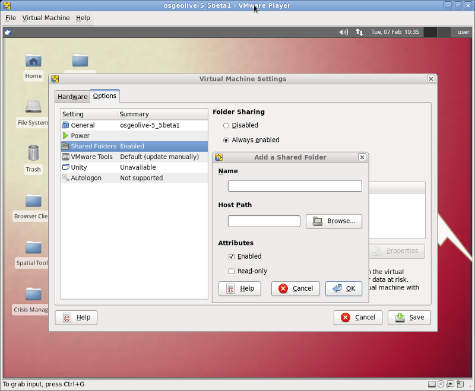

Guida rapida su OSGeo-Live per VMWare Player¶
OSGeo-Live può essere installata come un macchina virtuale “ospite” su un host computer. The host può essere sia Windows che Linux. The host machine avrà un software (such as VMWare Player) installato per eseguire macchine virtuali. Le seguenti istruzione servono per impostare OSGeo-Live come Macchina Virtuale.
Perch+ eseguire OSGeo-Live in una Macchina Virtuale?¶
Eseguire OSGeo-Live un una VM migliora l’esperienza LiveDVD permettendo all’utenti di salvare il suo lavoro, aggiornare il sistema e installare software aggiuntivo. Inoltre, il computer virtuale risponde più velocemente che eseguendolo dal DVD originale. La macchina virtuale di OSGeo crea un ambiente completo, naturale. A differenza del LiveDVD, i dati e i file sono salvati, le configurazione sono persistenti, come se aveste un secondo computer all’interno della macchina principale. Questa piattaforma estende l’usabilità OSGeo-Live dopo la presentazione o ad un’esercitazione basilare, e utilizzandola per un lavoro GIS reale.
Requisiti¶
Hardware¶
Il vostro computer dovrebbe avere al meno 2GB di RAM. Dovrete allocare 1GB per la macchina virtuale, e lasciare i GB per l’host. Più memoria è sempre meglio, questo dipenderà le perfomance, potrai aggiustare la quantità di memoria per la VM dopo. Riguardo la spazio sul disco, avrete bisogno di almeno 25GB liberi. Creando un hard disk virtuale più grande vi lascerà con più spazio per il vostro lavoro. Inoltre sarebbe utile che la CPU nel vostro computer supportasse le macchine virtuali. (La maggior parte dei computers prodotti negli ultimi cinque anni hanno CPU che includono VT=Virtualization Technology).
Software¶
Scaricate la versione di OSGeo-Live per VM. Avrete bisogno del programma di compressione 7-zip per decomprimete questo file. Ovviamente il software VMWare Player per eseguire la macchina virtuale. Notate che VMWare Player, viene distribuito in download senza costi, ma non è software libero e open source. Dovete registrarvi sul sito internet di VMWare e accettare la loro livenza al fine di usare il software.:
Decomprimete osgeo-live-vm usando il comando
7z e osgeo-live-vm-5.5.7z
o usando la GUI del programma 7-zip. Inoltre installate il software VMWare Player.
Impostare la VM¶
AL fine di eseguire la macchina virtuale OSGeo, per prima cosa bisogna creare un file di configurazione vmx. Il modo più semplice è di visualizzare:
- Cliccate sul bottone easyvmx e inserite queste opzioni di configurazione nel form:
- Virtual Machine Name: osgeolive-5.5 (choose same name as the vmdk file)
- Select GuestOS: Ubuntu
- Memory Size: 1024 MB (at least)
- Virtual Machine Description: OSGeo-Live 5.5
- Network Interface Card: (leave at default)
- Hardisk Drives: Disk#1 Disk Size 20GB (at least) and check SCSI
- Sound and IO: uncheck all


Cliccate sul bottone in fondo “Create Experimental Virtual Machine”. Il sito creerà un file vmx correttamente
formattato contenente tutte le configurazioni inserite sopra. Dovrete mettere questo file nella directory dove si
trova il file OSGeo vmdk. Nella schermata successiva, copiate tutte le linee da #!/usr/bin/vmplayer a
# END OF EasyVMX! CONFIG e incollatele in un nuovo file denominato osgeolive-5.5.vmx.

Il prefisso del nome del file (senza l’estenzione vmx) dovrebbe combaciare con il nome del file OSGeo vmdk. Inoltre
uno controllo accurato alla linea del file vmx che si riferisci a scsi0:0.fileName =. Siate sicure che questo
combaci esattamente con il nome del file vmdk scaricato.
Salvate questo nuovo file vmx nella stessa directory del vostro file OSGeo vmdk scaricato.
Ora avviate VMWare Player e cliccate sul pulsante Aprire una Macchina Virtuale. Navigate fino la directory dove entrambi i file, il vmdk scaricato e la file vmx appena creato. Puntate verso il vmx e la nuova macchina virtuale dovrebbe essere aggiunto alla lista nella finestra del Player. Cliccare il pulsante Play Virtual Machine e OSGeo VM dovrebbe avviarsi.


Quando la VM è in esecuzione¶
La prima cosa che dovreste fare è di installare il pacchetti dei VMWare-tools. Una volta che questi sono installati, puoi migliorare la risoluzione del display, e le cartelle condivise tra il vostro computer e OSGeo-Live VM. Eseguite questo comando in un terminale per installare gli strumenti VMWare:
sudo apt-get install open-vm-dkms open-vm-toolbox
Nella finestra della macchina virtuale, selezionate il menu , spostatevi la scheda Opzioni, quindi fate clic su impostazione Cartelle Condivise. Ora potete cliccare il pulsante “+” dal vostro computer condiviso nel sistema virtuale OSGeo-Live. Supponiamo che si vuole condividere la directory C:\Users\your_name\Downloads. Cliccare il pulsante per navigare per trovare la directory, dategli il nome di “Downloads”, e cliccare “Save”.
{kind=link}
Ora eseguite due comandi addizionali nel terminal per montare le cartelle condivise:
sudo mkdir /mnt/Downloads
sudo mount -t vmhgfs .host:/Downloads /mnt/Downloads
E divertitevi...